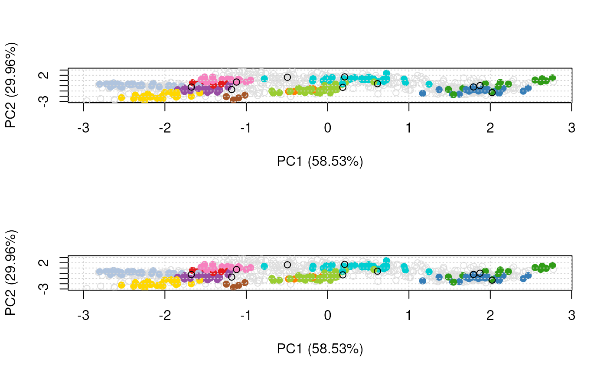

Highlight features of interest on a spatial proteomics plot
Source:R/plotting.R, R/plotting3.R
highlightOnPlot.RdHighlights a set of features of interest given as a
FeaturesOfInterest instance on a PCA plot produced by
codeplot2D or plot3D. If none of the features of interest
are found in the MSnset's featureNames, an warning
is thrown.
highlightOnPlot(object, foi, labels, args = list(), ...) highlightOnPlot3D(object, foi, labels, args = list(), radius = 0.1 * 3, ...)
Arguments
| object | The main dataset described as an |
|---|---|
| foi | An instance of |
| labels | A |
| args | A named list of arguments to be passed to
|
| ... | Additional parameters passed to |
| radius | Radius of the spheres to be added to the
visualisation produced by |
Value
NULL; used for its side effects.
Author
Laurent Gatto
Examples
library("pRolocdata") data("tan2009r1") x <- FeaturesOfInterest(description = "A test set of features of interest", fnames = featureNames(tan2009r1)[1:10], object = tan2009r1) ## using FeaturesOfInterest or feature names par(mfrow = c(2, 1)) plot2D(tan2009r1) highlightOnPlot(tan2009r1, x) plot2D(tan2009r1)highlightOnPlot(tan2009r1, featureNames(tan2009r1)[1:10])#> PC1 (58.53%) PC2 (29.96%) #> P20353 0.2103374 1.6959266 #> P53501 -0.4940607 1.6207386 #> Q7KU78 -1.1794311 -0.7242185 #> P04412 0.6128549 0.3944441 #> Q7KJ73 0.1866756 -0.3007028 #> Q7JZN0 2.0228016 -1.3087061highlightOnPlot(.pca, x, col = "red") highlightOnPlot(tan2009r1, x, col = "red", cex = 1.5) highlightOnPlot(tan2009r1, x, labels = TRUE) .pca <- plot2D(tan2009r1, dims = c(1, 3))#> Warning: "dims" is not a graphical parameter.pca2 <- plot2D(tan2009r1, mirrorX = TRUE, dims = c(1, 3)) ## previous pca matrix, need to mirror X axis highlightOnPlot(.pca, x, pch = "+", args = list(mirrorX = TRUE)) ## new pca matrix, with X mirrors (and 1st and 3rd PCs) highlightOnPlot(.pca2, x, col = "red") plot2D(tan2009r1)highlightOnPlot(tan2009r1, x)highlightOnPlot(tan2009r1, x, labels = TRUE, pos = 3)highlightOnPlot(tan2009r1, x, labels = "Flybase.Symbol", pos = 1)## in 3 dimensions if (interactive()) { plot3D(tan2009r1, radius1 = 0.05) highlightOnPlot3D(tan2009r1, x, labels = TRUE) highlightOnPlot3D(tan2009r1, x) }